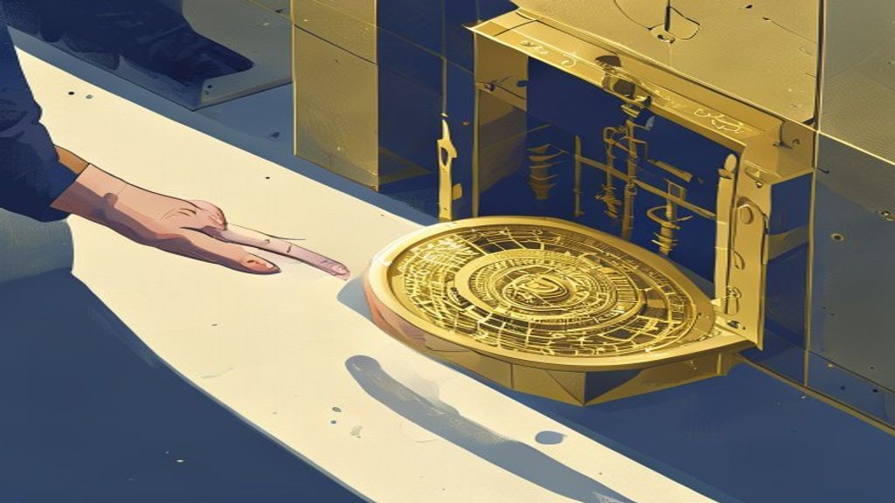

Latest insights
Personal-finance explainers, market briefs, F&O positioning and business stories — all in one place.
Carlsberg India IPO: What It Means for Indian Investors
Danish brewing major Carlsberg has filed draft papers for an Initial Public Offering (IPO) of its Indian subsidiary with SEBI. This move allows Carlsberg to u.

Bajaj Auto Buyback: Understanding Your Capital Gains Tax
Bajaj Auto's ₹5,632 crore share buyback will be taxed under a new capital gains framework effective April 1, 2026. Under the new rules, buyback proceeds are n.
Politics explained
The government has approved higher Minimum Support Prices (MSP) for 14 Kharif crops for the 2026-27 season. MSP is a guaranteed price at which the government .
SEBI's Performance-Linked Fee vs. TER: What It Means for Your Mutual Funds
SEBI has proposed a new framework to link mutual fund fees directly to a scheme's performance. This model aims to replace or supplement the existing Total Exp.
TDS on Salary: Employer's Calculation Under the New Act
From April 1st, 2026, TDS on salary is governed by the new Income Tax Act 2025, replacing the 1961 Act. Your employer deducts Tax Deducted at Source (TDS) fro.

Market Wrap — 02 July 2026
Nifty 50 closed higher, gaining over 0.7%, while Bank Nifty remained flat. IT and Auto sectors were the top performers, driving the market's upward momentum.
Pre-Market Brief — 02 July 2026
Global markets closed mixed, with Asian indices showing weakness while US and European markets saw minor declines. FIIs continued their selling streak, offloa.
Adani Green Energy Q1FY27 Results: What to Watch For
Adani Green Energy's Board will meet on July 22, 2026, to approve its Q1FY27 financial results. For the March-ending quarter (Q4FY26), the company reported a .
India F&O Pulse — 02 Jul 2026: what the day's options & futures positioning is whispering
End-of-day reading of India's F&O open interest, PCR, max pain and FII positioning — explained simply.
Economics explained
India's merchandise trade deficit is the gap when the value of goods imported exceeds the value of goods exported. Recent data for May 2026 showed the deficit.
Gold Loans Surge: What RBI's Financial Stability Report Reveals
Gold loans are now India's fastest-growing retail credit segment, as per the latest RBI Financial Stability Report (FSR). They have shown a remarkable Compoun.
Section 80C Deductions: Full List & The ₹1.5 Lakh Limit Explained (FY 2025-26)
Section 80C allows individuals and Hindu Undivided Families (HUFs) to reduce their taxable income by investing in or spending on specific instruments. The max.

Market Wrap — 01 July 2026
Indian markets started July on a positive note, with Nifty 50 closing above 24,000 and Bank Nifty gaining over 0.8%. Realty, FMCG, and Media sectors led the c.
Pre-Market Brief — 01 July 2026
Global markets ended mostly positive, with US tech indices showing strong gains. FIIs were net sellers for the fourth time in the last five sessions, while DI.
India F&O Pulse — 01 Jul 2026: what the day's options & futures positioning is whispering
End-of-day reading of India's F&O open interest, PCR, max pain and FII positioning — explained simply.

Getting Your Share Sale Money Instantly: What T+0 Settlement Means
T+0 settlement means you get your money on the very same day you sell shares in the stock market. India's market regulator, SEBI, has made T+0 settlement opti.
SEBI Proposal: FPIs in Physically Settled Commodity Trades
SEBI is considering allowing Foreign Portfolio Investors (FPIs) to participate in physically settled commodity derivative contracts. This initiative aims to r.
Old Tax Regime: Slabs & Deductions for FY 2025-26
The old tax regime remains an option for taxpayers in FY 2025-26 (AY 2026-27), despite the new regime becoming the default. It allows a wide array of deductio.

Market Wrap — 30 June 2026
Indian benchmark indices, Nifty 50 and Bank Nifty, closed in the red for the second consecutive session. Broader markets, represented by Nifty Midcap 100 and .
Pre-Market Brief — 30 June 2026
Global markets presented a mixed picture, with US indices closing significantly higher, while Asian and European markets showed varied performance. The Indian.
India F&O Pulse — 30 Jun 2026: what the day's options & futures positioning is whispering
End-of-day reading of India's F&O open interest, PCR, max pain and FII positioning — explained simply.

Market explained
India has opened its stock market wider to individual investors living abroad. Earlier, only Non-Resident Indians (NRIs) and Overseas Citizens of India (OCIs).
Missed FD Income: How to Rectify and What Happens If You Don't
Fixed Deposit (FD) interest income is fully taxable under Indian income tax laws. If you missed declaring FD interest in your original Income Tax Return (ITR).

Market Wrap — 29 June 2026
Indian benchmark indices, Nifty 50 and Bank Nifty, closed in the red today. Broader markets, Nifty Midcap 100 and Smallcap 100, also saw declines.
Pre-Market Brief — 29 June 2026
Global markets closed mixed, with Western indices slightly down while Asian counterparts showed gains. Crude oil prices are on the rise, while gold and silver.
India F&O Pulse — 29 Jun 2026: what the day's options & futures positioning is whispering
End-of-day reading of India's F&O open interest, PCR, max pain and FII positioning — explained simply.

SEBI's Madhabi Puri Buch: Protecting Your Money from Online Threats
SEBI Chairperson Madhabi Puri Buch recently highlighted the crucial need for stronger cybersecurity in India's financial markets. This means stock exchanges, .
RBI Cracks Down on Bank's 'Dark Patterns' and Mis-selling
The Reserve Bank of India (RBI) has issued new guidelines to curb unfair sales practices by banks and financial service providers. These guidelines specifical.
SCSS: Securing a ₹20,500 Monthly Income for Senior Citizens
The Senior Citizens' Savings Scheme (SCSS) is a government-backed scheme designed to provide a stable income for Indian senior citizens. It offers predictable.

Amazon's Big Bet on India: What $48 Billion Means for Your Digital Life
Amazon is investing a massive $48 billion (over ₹4 lakh crore) in India by 2030. A significant portion, $13 billion, is specifically for Artificial Intelligen.
Zerodha's New Life Cycle Funds: A Practical Guide
Zerodha Fund House has launched India's first life cycle mutual funds, a new category introduced by SEBI in February 2026. These target-date funds automatical.
ITR-1 (Sahaj) AY 2026-27: Your Guide to Simplified Tax Filing
ITR-1 (Sahaj) is the simplest income tax return form, designed for resident individuals with a total income up to ₹50 lakhs. It covers income primarily from s.
HDFC AMC's Upcoming June Quarter Results: What Investors Should Watch
HDFC Asset Management Company (AMC) will announce its financial results for the June 2026 quarter on July 15, 2026. The company's trading window for shares wi.

West Bengal's Budget Shift: What Cuts to Minority Welfare Funds Mean
The new West Bengal government has significantly reduced funds for the Minority Affairs and Madrasah Education (MAME) Department. The budget for the departmen.
ITR-4 (Sugam) for AY 2026-27: Eligibility, Presumptive Taxation & Filing Guide
ITR-4 (Sugam) is a simplified income tax return form for resident individuals, HUFs, and partnership firms (excluding LLPs) opting for presumptive taxation. I.

Market Wrap — 26 June 2026
Indian benchmark indices, Nifty 50 and Bank Nifty, closed marginally in the green, showing resilience. Broader markets, represented by Nifty Midcap 100 and Sm.
Pre-Market Brief — 26 June 2026
Global markets presented a mixed picture, with Asian indices, particularly Japan and South Korea, experiencing significant declines. Crude oil prices eased, w.
Micron Shares Surge on Blockbuster Earnings: How Indians Can Invest
Micron Technology reported record-breaking Q3 FY2026 results, with revenue of $41.46 billion and adjusted EPS of $25.11, significantly exceeding analyst expec.
India F&O Pulse — 26 Jun 2026: what the day's options & futures positioning is whispering
End-of-day reading of India's F&O open interest, PCR, max pain and FII positioning — explained simply.
India's Current Account: Why a Surprise Surplus in Q4 FY26 Matters
India recorded a healthy $7.1 billion (₹59,200 crore approx.) current account surplus in January-March 2026 (Q4 FY26). This means the country earned more fore.
SEBI Eases NISM Certification for RMs & Sales Staff
SEBI has simplified the National Institute of Securities Markets (NISM) certification requirements for specific roles in the financial sector. This relaxation.
HRA Rules Revised: Bigger Tax Benefits for Bengaluru, Pune, Hyderabad
The Central Board of Direct Taxes (CBDT) has expanded the list of cities considered 'metro' for House Rent Allowance (HRA) exemption purposes. Bengaluru, Hyde.

Market Wrap — 25 June 2026
Indian benchmark indices, Nifty 50 and Bank Nifty, closed marginally higher, extending their winning streak. Broader markets, represented by Nifty Midcap 100 .
Pre-Market Brief — 25 June 2026
Global markets closed mixed, with US indices largely flat to negative, while Asian markets showed divergence, led by a strong Nikkei. Crude oil prices continu.
Micron's Strong Earnings Drive Asian Stock Rally
South Korea's Kospi index surged over 5% at market open, while the small-cap Kosdaq gained 1.32%. Japan's Nikkei 225 index also saw a significant rise, climbi.
India F&O Pulse — 25 Jun 2026: what the day's options & futures positioning is whispering
End-of-day reading of India's F&O open interest, PCR, max pain and FII positioning — explained simply.
Your Insurance Policy: Now, Who Really Sold It To You?
India's insurance regulator, IRDAI, is proposing big changes to how insurance is sold. Every insurance policy might soon be digitally linked to the specific s.
Claiming Capital Gains Tax Exemption on Asset Sales up to ₹10 Crore
Selling long-term capital assets like shares, mutual funds, or gold can lead to capital gains tax. Section 54F of the Income Tax Act allows you to exempt thes.

Market Wrap — 24 June 2026
Indian benchmark indices, Nifty 50 and Bank Nifty, closed significantly higher, with Nifty reclaiming the 24,000 mark. Realty, IT, and Banking sectors led the.

Pre-Market Brief — 24 June 2026
Global markets closed mostly lower, with US tech indices seeing significant declines, signalling a cautious start. Indian markets, however, saw a strong rebou.
India F&O Pulse — 24 Jun 2026: what the day's options & futures positioning is whispering
End-of-day reading of India's F&O open interest, PCR, max pain and FII positioning — explained simply.